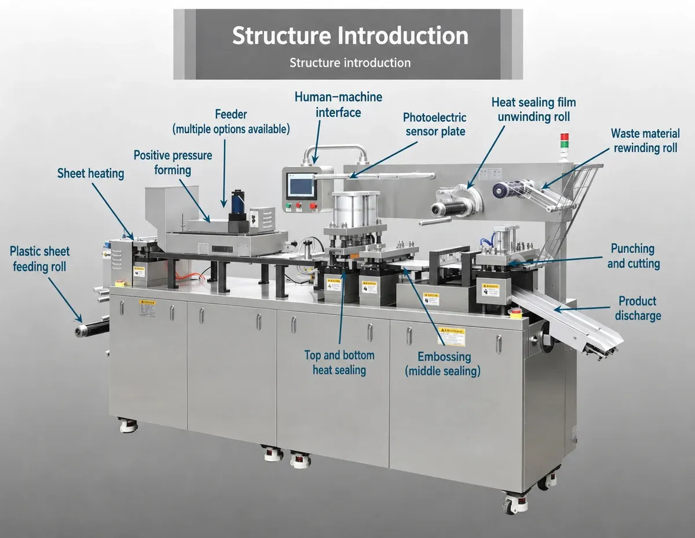
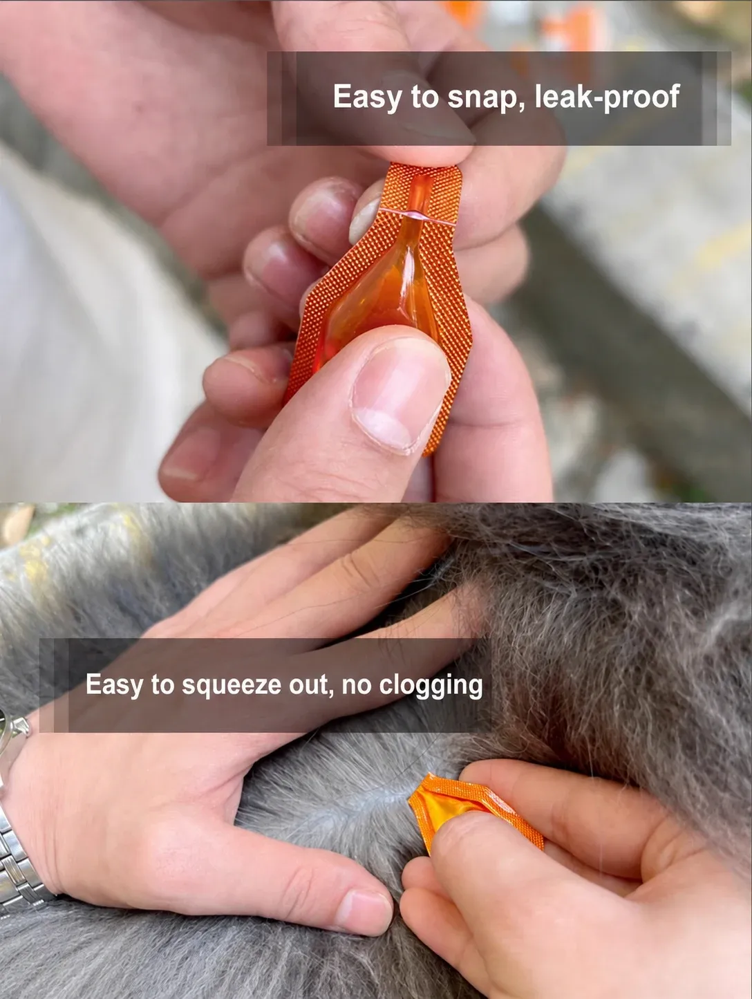
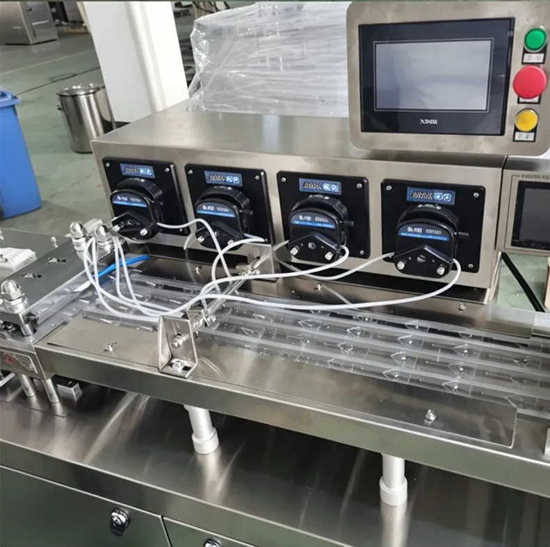
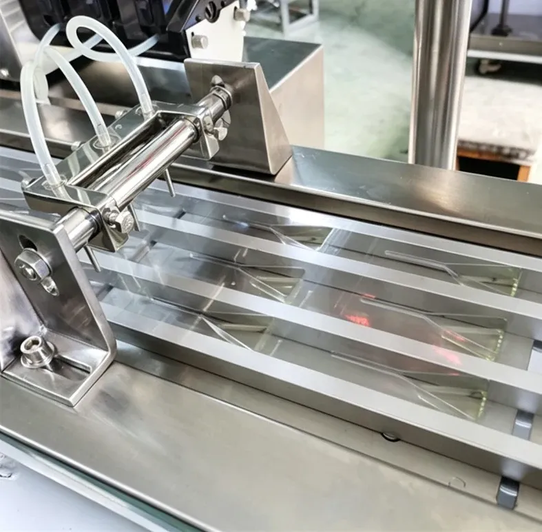
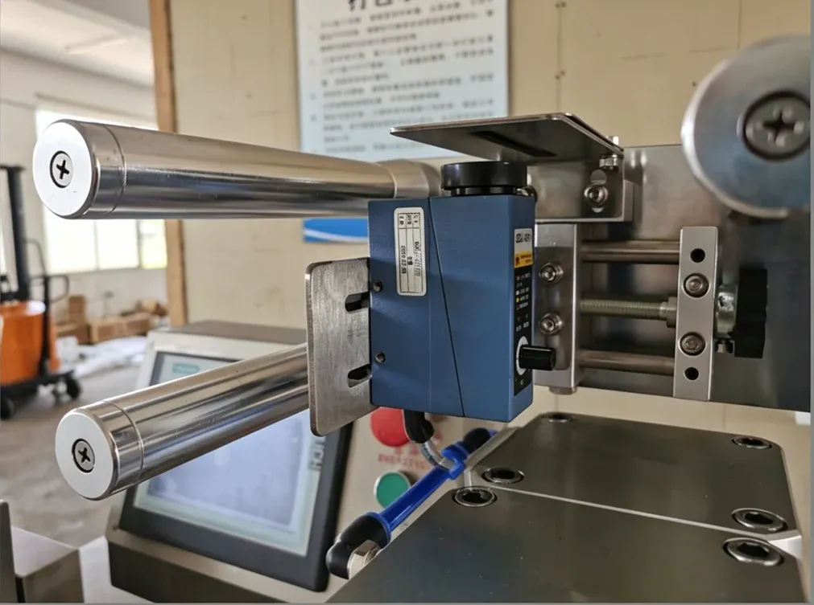

01
Single-Dose Format
Each pack holds one exact dose, so the end user opens one sealed unit per use with no measuring and no waste.
Automatic Unit-Dose Packaging for Veterinary Liquids, Honey, Jam, Butter, Chocolate and Other Compatible Products
Note: Values marked * are reference values from the source — their units are not clearly stated and should be confirmed with the manufacturer before ordering. Items marked 'To be confirmed' depend on the final configuration and dose evaluation.
The PDP-260 is an automatic liquid blister packaging machine that forms, fills, seals and cuts individual unit-dose packages in one continuous process. It suits veterinary spot-on medicines such as fipronil and abamectin, and honey, jam, butter, chocolate and other compatible liquids.
Depending on the selected configuration, the machine can automatically complete blister forming, liquid filling, heat sealing, coding, labeling, punching and cutting. The machine body and product-contact parts are made of high-quality stainless steel for convenient cleaning and routine maintenance.

Each pack holds one exact dose, so the end user opens one sealed unit per use with no measuring and no waste.
Cavity size and dose are customized to the product, giving repeatable portion packs for liquids and semi-liquids.
Formed blister packs are compact and suitable for secondary cartoning and retail display.
For veterinary spot-on products, the pack can be designed with a break-off dispensing section for convenient opening.
Sealed unit-dose packs suit products that need clean, repeatable small-dose packaging.
Veterinary spot-on liquid is the PDP-260's signature application: a single-dose easy-break blister that the pet owner snaps open and squeezes out, with no measuring and no mess. The same formed-pack format also suits portion-controlled food products.
The final filling system, sealing material and product-contact configuration should be selected according to viscosity, filling volume, temperature sensitivity and chemical compatibility. Sample evaluation is recommended before tooling is finalized.

Fipronil, abamectin and compatible pet deworming / topical liquids in a single-dose easy-break blister pack.
Portion-controlled honey packaging in a formed unit-dose pack.
Small-dose jam packaging in a formed sealed blister / portion pack.
Portion-controlled butter packaging in a formed sealed cavity.
Compatible chocolate or chocolate-based filling in a formed unit-dose pack.
Spot-on medicines and other veterinary liquids in sealed unit-dose packs.
Single-dose pet care liquids for easy, hygienic application.
Portion-controlled honey, jam, butter and chocolate packs.
Flexible unit-dose formats for third-party brands.
Small-dose liquid and semi-liquid products in custom cavities.
Combines blister forming, filling, heat sealing, punching and cutting in one automatic production cycle to reduce manual handling and improve production consistency.
Suitable for veterinary liquids and selected food products such as honey, jam, butter and chocolate, subject to product and packaging-material compatibility.
Can be configured for fipronil, abamectin and other compatible pet topical liquids requiring compact single-dose packaging.
For veterinary applications, the formed pack can be designed with a break-off dispensing section for convenient opening while maintaining reliable sealing before use.
The filling system is selected according to product viscosity and target volume to provide repeatable dosing for small liquid or semi-liquid quantities.
Sealing temperature, pressure and dwell time can be adjusted according to the selected packaging material to help achieve a clean and secure seal.
Coding and labeling can be integrated into the automatic process according to the required production and traceability information.
Package cavity dimensions, shape, dose format and cutting style can be adapted through customized tooling.
The machine body and product-contact parts are manufactured from high-quality stainless steel for convenient cleaning and maintenance.
The automatic production sequence and key parameters can be managed through the machine control interface for convenient operation and changeover.
Packaging material is automatically fed and indexed through the machine. At the forming station, it is shaped into the required cavities using customized tooling. The filling system doses the product into each cavity, and the package is heat sealed under controlled temperature and pressure.
Coding and labeling functions can be integrated according to the configuration. Finally, the sealed material is punched and cut into the required finished format, ready for collection or secondary cartoning.

Packaging film is automatically fed and indexed through the machine.
The material is shaped into the required cavities using customized tooling.
The filling system doses the product into each cavity.
The filled blister is sealed under controlled temperature and pressure.
Batch or date coding is applied according to the configuration.
Labels are applied according to the package design.
The sealed material is punched into the required cavity or strip format.
Packs are automatically cut into the finished format.
Finished unit-dose packs are discharged for collection or cartoning.
The forming station shapes the packaging material into cavities using customized tooling. Cavity dimensions, shape and depth are adapted to the required dose and finished package appearance.
Sheet heating and positive-pressure forming prepare the material before the filling station doses the product into each cavity.

Filling volume is customized according to the target dose.
Pump selection is based on product viscosity and flow behavior.
An anti-drip filling nozzle can be configured.
Product-contact parts are selected according to compatibility requirements.
Multi-lane filling can be evaluated for higher output.
The film feeding system unwinds the forming film and the heat-sealing foil, with a photoelectric sensor plate for registration. Printed-film registration can be added as an optional configuration.
Waste material is rewound automatically, keeping the forming and sealing stations clear during continuous production.

Sealing temperature, pressure and dwell time are adjustable.
Sealing tooling is customized to the package format.
Package material compatibility is tested before production.
An easy-break opening area can be designed without compromising the main seal.
Leak-resistance verification is recommended during sample trials.
A PLC-based automatic sequence controls forming, filling, sealing and cutting in synchronization, with parameters set and monitored through the touchscreen HMI.
The electrical control cabinet houses the PLC, drives and protection devices. Machine-status monitoring and alarm functions can be configured.
The automatic production sequence runs on PLC control.
Parameters are set and operated through the touchscreen.
Forming, filling, sealing and cutting stations run in synchronization.
Production timing can be adjusted from the control interface.
Machine-status monitoring and alarm functions can be configured.
Every PDP-260 includes the main machine frame, material feeding system, flat-plate forming station, filling system, heat-sealing station, punching and cutting station, PLC control, touchscreen HMI, electrical cabinet and one set of package tooling.
Extra molds for other dose sizes and cavity formats.
A different filling system for other viscosities.
Multi-lane filling for higher output.
Integrated date and batch coding.
Integrated labeling for the finished package.
Registration control for printed film.
Collection or transfer system for finished packs.
Further stainless-steel upgrades on request.
A safety enclosure for the production area.
Actual product samples should be tested before final filling-system selection.
Packaging material should be confirmed before tooling is finalized.
The sealing window should be established using the actual material and product.
For veterinary formulations, chemical compatibility of seals, hoses and product-contact parts should be verified.
For food products, the final contact-material and hygiene requirements should be confirmed according to the customer's market and product standards.
A production trial with the customer's actual material is recommended before final acceptance.
What liquid or semi-liquid product will be packed?
A sample, photo or technical information about the product.
Filling volume or weight per dose.
Product viscosity and working temperature.
How many packs per hour do you need?
Finished package drawing or sample.
Material structure and thickness.
Required number of cavities or doses per strip.
Do you need an easy-break opening?
Do you need date or batch coding?
Do you need labeling?
Your local voltage and frequency.
Where the machine will be installed.
Watch the PDP-260 form, fill, seal and cut unit-dose blister packs in one automatic cycle.
Tell us your product, dose size and package format — we will confirm the filling system, tooling and configuration for your application.